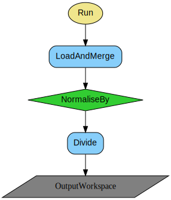
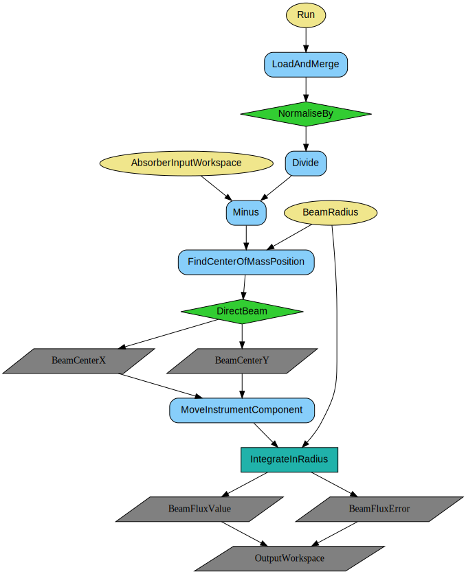
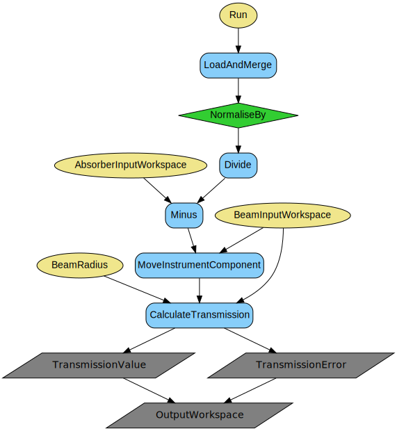
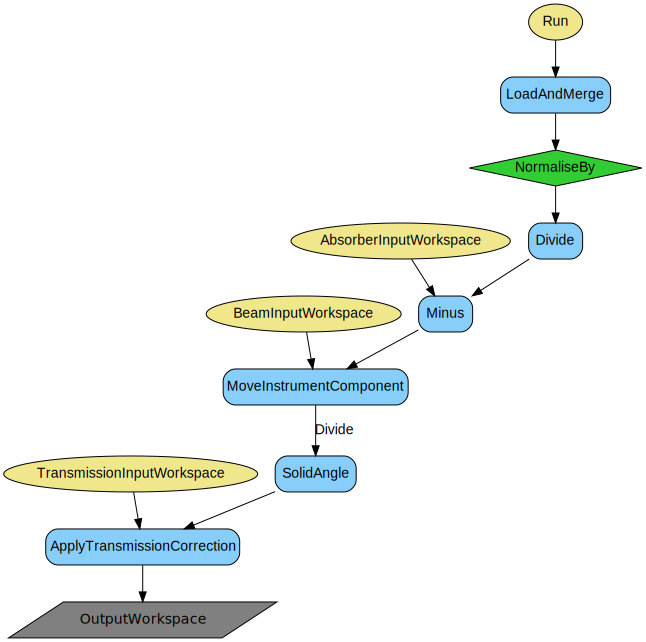
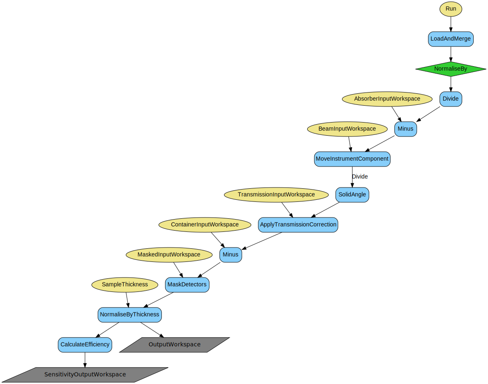
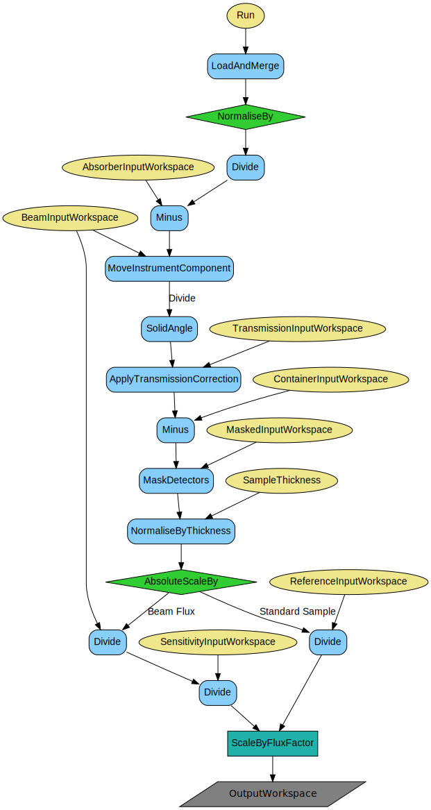
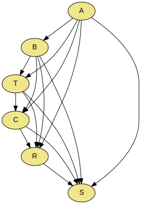

\(\renewcommand\AA{\unicode{x212B}}\)
SANSILLReduction v1¶
{kind=link}
SANSILLReduction dialog.¶
Summary¶
Performs SANS data reduction at the ILL.
See Also¶
Properties¶
Name |
Direction |
Type |
Default |
Description |
|---|---|---|---|---|
Run |
Input |
list of str lists |
File path of run(s). Allowed values: [‘nxs’] |
|
ProcessAs |
Input |
string |
Sample |
Choose the process type. Allowed values: [‘Absorber’, ‘Beam’, ‘Transmission’, ‘Container’, ‘Sample’] |
OutputWorkspace |
Output |
Mandatory |
The output workspace based on the value of ProcessAs. |
|
NormaliseBy |
Input |
string |
Timer |
Choose the normalisation type. Allowed values: [‘None’, ‘Timer’, ‘Monitor’] |
BeamRadius |
Input |
number |
0.05 |
Beam radius [m]; used for beam center finding, transmission and flux calculations. |
BeamFinderMethod |
Input |
string |
DirectBeam |
Choose between direct beam or scattered beam method for beam center finding. Allowed values: [‘DirectBeam’, ‘ScatteredBeam’] |
SampleThickness |
Input |
number |
0.1 |
Sample thickness [cm] (if -1, the value is taken from the nexus file). |
AbsorberInputWorkspace |
Input |
The name of the absorber workspace. |
||
BeamInputWorkspace |
Input |
The name of the empty beam input workspace. |
||
TransmissionInputWorkspace |
Input |
The name of the transmission input workspace. |
||
ContainerInputWorkspace |
Input |
The name of the container workspace. |
||
ReferenceInputWorkspace |
Input |
The name of the reference workspace. |
||
SensitivityInputWorkspace |
Input |
The name of the input sensitivity workspace. |
||
SensitivityOutputWorkspace |
Output |
The name of the output sensitivity workspace. |
||
MaskedInputWorkspace |
Input |
Workspace to copy the mask from; for example, the beam stop |
||
FluxInputWorkspace |
Output |
The name of the input direct beam flux workspace. |
||
FluxOutputWorkspace |
Output |
The name of the output direct beam flux workspace. |
||
CacheSolidAngle |
Input |
boolean |
False |
Whether or not to cache the solid angle workspace. |
WaterCrossSection |
Input |
number |
1 |
Provide water cross-section; used only if the absolute scale is done by dividing to water. |
DefaultMaskedInputWorkspace |
Input |
Workspace to copy the mask from; for example, the bad detector edges. |
||
ThetaDependent |
Input |
boolean |
True |
Whether or not to use 2theta dependent transmission correction |
InputWorkspace |
Input |
Input workspace containing already loaded raw data, used for parameter scans. |
||
SolventInputWorkspace |
Input |
The name of the solvent workspace. |
||
Wavelength |
Input |
number |
0 |
Wavelength set for the data, will override nexus, intended for D16 reduction. |
MinThreshold |
Input |
number |
0 |
Minimum threshold for calculated efficiency. |
MaxThreshold |
Input |
number |
2 |
Maximum threshold for calculated efficiency. |
Description¶
This algorithm performs SANS reduction for the instruments at the ILL. With each call, this algorithm processes one type of data which is a part of the whole experiment. The logic is resolved by the property ProcessAs, which governs the reduction steps based on the requested type. It can be one of the 5: absorber, beam, transmission, container, and sample. Note that in the following, the reference stands for the water run, that should be processed as sample, but with different configurations, in order to generate either the reference input or the sensitivity map for the subsequent sample measurements. The full data treatment of the complete experiment should be build up as a chain with multiple calls of this algorithm over various types of acquisitions. The sequence should be logical, typically as enumerated above, since the later processes need the outputs of earlier processes as input. The common mandatory input is a run file (numor), or a list of them, in which case they will be summed at raw level, so right after loading. The other common input is the normalisation type (time or monitor) that must be the same for all the runs in full reduction. The common mandatory output is a workspace, but up to which step it is processed, depends on ProcessAs.
ProcessAs¶
Different input properties can be specified depending on the value of ProcessAs, as summarized in the table:
ProcessAs |
Input Workspace Properties |
Other Input Properties |
|---|---|---|
Absorber |
||
Beam |
|
|
Transmission |
|
|
Container |
|
|
Sample (Ref) |
|
|
Sample |
|
|
All the input workspace properties above are optional. For example, if processing as sample, if a container input is specified, subtraction will be performed, if not, the step will be skipped. The only exception is when processing as transmission, when beam input workspace is mandatory. When processing as reference there is an additional optional output workspace for sensitivity. Note that when reducing the water run as sample for reference, it will also be normalised by flux, if the corresponding input is supplied.
In the flowcharts below the yellow ovals represent the inputs, the grey parallelograms are the outputs for each process type.
Absorber¶
Beam¶
Transmission¶
Container¶
Reference¶
Sample¶
Full Treatment¶
Full treatment is built by stacking up unary reductions with corresponding ProcessAs. The diagram below illustrates the flow of processing. Letters denote absorber (A), beam (B), transmission (T), container (C), reference (R), sample (S). A is processed first, and passed to all the other processes. B takes only A as input, and the output of B is needed by the rest. T takes A and B as inputs, and the calculated transmission is used by C, R and S respectively. C takes A, B and the container T as input, and the output is supplied to R and S respectively. R takes A, B, its T, and C, and the output is seeded to S. S takes A, B, its T and C, as well as R as inputs. The output of S is passed to final step integration.
This example below performs a complete reduction for D11 data.
Note
For transmission calculation, the beam run and the transmission run have to be recorded at the same instrument configuration. For beam flux normalisation and beam center movement, the beam run and the sample run have to be recorded at the same configuration. For container subtraction, the container and the sample run have to be recorded at the same configuration. Otherwise a warning is logged, but the execution does not stop.
Note
To run these usage examples please first download the usage data, and add these to your path. In Mantid this is done using Manage User Directories.
Example - full treatment of a sample
# Load the mask (or load the sample, and mask graphically using the Instrument View)
LoadNexusProcessed(Filename='D11_mask.nxs', OutputWorkspace='mask')
# Process the dark current Cd/B4C for water
SANSILLReduction(Run='010455.nxs', ProcessAs='Absorber', OutputWorkspace='Cdw', Version=1)
# Process the empty beam for water
SANSILLReduction(Run='010414.nxs', ProcessAs='Beam', AbsorberInputWorkspace='Cdw', OutputWorkspace='Dbw', Version=1)
# Water container transmission
SANSILLReduction(Run='010446.nxs', ProcessAs='Transmission',
AbsorberInputWorkspace='Cdw', BeamInputWorkspace='Dbw',
OutputWorkspace='wc_tr', Version=1)
print('Water container transmission is {0:.3f}'.format(mtd['wc_tr'].readY(0)[0]))
# Water container
SANSILLReduction(Run='010454.nxs', ProcessAs='Container',
AbsorberInputWorkspace='Cdw', BeamInputWorkspace='Dbw',
TransmissionInputWorkspace='wc_tr', OutputWorkspace='wc', Version=1)
# Water transmission
SANSILLReduction(Run='010445.nxs', ProcessAs='Transmission',
AbsorberInputWorkspace='Cdw', BeamInputWorkspace='Dbw', OutputWorkspace='w_tr', Version=1)
print('Water transmission is {0:.3f}'.format(mtd['w_tr'].readY(0)[0]))
# Water
SANSILLReduction(Run='010453.nxs', ProcessAs='Sample', MaskedInputWorkspace='mask',
AbsorberInputWorkspace='Cdw', ContainerInputWorkspace='wc',
BeamInputWorkspace='Dbw', TransmissionInputWorkspace='wc_tr',
SensitivityOutputWorkspace='sens', OutputWorkspace='water', Version=1)
# Process the dark current Cd/B4C for sample
SANSILLReduction(Run='010462.nxs', ProcessAs='Absorber', OutputWorkspace='Cd', Version=1)
# Process the empty beam for sample
SANSILLReduction(Run='010413.nxs', ProcessAs='Beam', AbsorberInputWorkspace='Cd', OutputWorkspace='Db', Version=1)
# Sample container transmission
SANSILLReduction(Run='010444.nxs', ProcessAs='Transmission',
AbsorberInputWorkspace='Cd', BeamInputWorkspace='Dbw', OutputWorkspace='sc_tr', Version=1)
print('Sample container transmission is {0:.3f}'.format(mtd['sc_tr'].readY(0)[0]))
# Sample container
SANSILLReduction(Run='010460.nxs', ProcessAs='Container',
AbsorberInputWorkspace='Cd', BeamInputWorkspace='Db',
TransmissionInputWorkspace='sc_tr', OutputWorkspace='sc', Version=1)
# Sample transmission
SANSILLReduction(Run='010585.nxs', ProcessAs='Transmission',
AbsorberInputWorkspace='Cd', BeamInputWorkspace='Dbw', OutputWorkspace='s_tr', Version=1)
print('Sample transmission is {0:.3f}'.format(mtd['s_tr'].readY(0)[0]))
# Sample
SANSILLReduction(Run='010569.nxs', ProcessAs='Sample', MaskedInputWorkspace='mask',
AbsorberInputWorkspace='Cd', ContainerInputWorkspace='sc',
BeamInputWorkspace='Db', SensitivityInputWorkspace='sens',
TransmissionInputWorkspace='s_tr', OutputWorkspace='sample_flux', Version=1)
# Convert to I(Q)
SANSILLIntegration(InputWorkspace='sample_flux', OutputWorkspace='iq')
Output:
Water container transmission is 0.946
Water transmission is 0.501
Sample container transmission is 0.667
Sample transmission is 0.642
Categories: AlgorithmIndex | ILL\SANS
Source¶
Python: SANSILLReduction.py